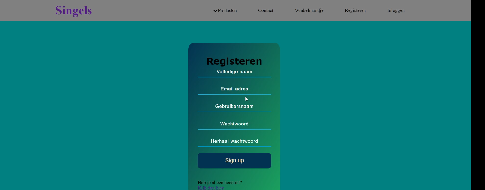
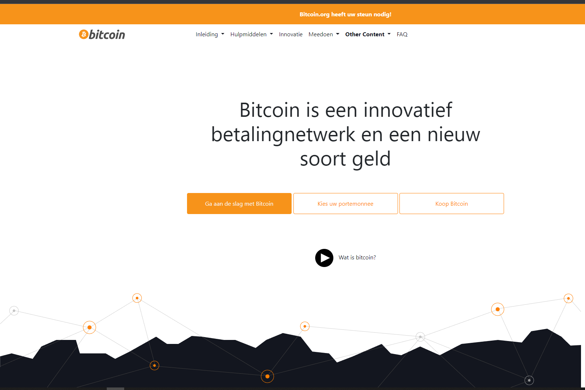
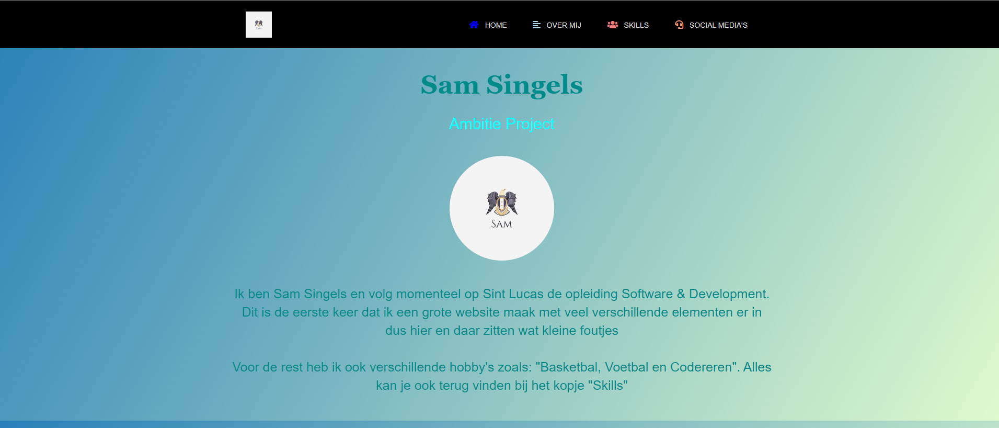

This was a school project I needed to make to showcase what we were doing. People were walking by and seeing your projects. I loved doing this project because I learned a lot of PHPS in this project and made something that I was proud of.
What tools / language / technology were used: I made this project in VScode, XXAMP for the live server and, I tried to use FileZilla Client but that didn’t work because I didn’t want to spent money.
Link: This didn’t work, and I talked with Pieter about it. We will fix this later

What is it: This is a website I made for school we needed to choose a site. And we needed to make it actuality the same as the mean site only using bootstrap. I decided to make the Bitcoin site, if I say so myself it is almost the same.
What tools / language / technology were used: I only used VScode for this website and for the language I used bootstrap and the bootstrap page / bootstrap builder.
Link: This didn’t work, and I talked with Pieter about it. We will fix this later

What is it: This was a website I made for fun just to test my skills. I didn’t have purpose. In my opinion I did a good job for the experience I had because this was after 6 months. The only thing that is buggy is “Skills” tab. Because I screwed op the resolution and I used bars to showcase my skills what is also not good. With this site I just learned a bit more and tested skills
What tools / language / technology were used: I only used VScode for this website and for the language I used CSS and HTML nothing else because I didn’t learn a other thing.
Link: This didn’t work, and I talked with Pieter about it. We will fix this later